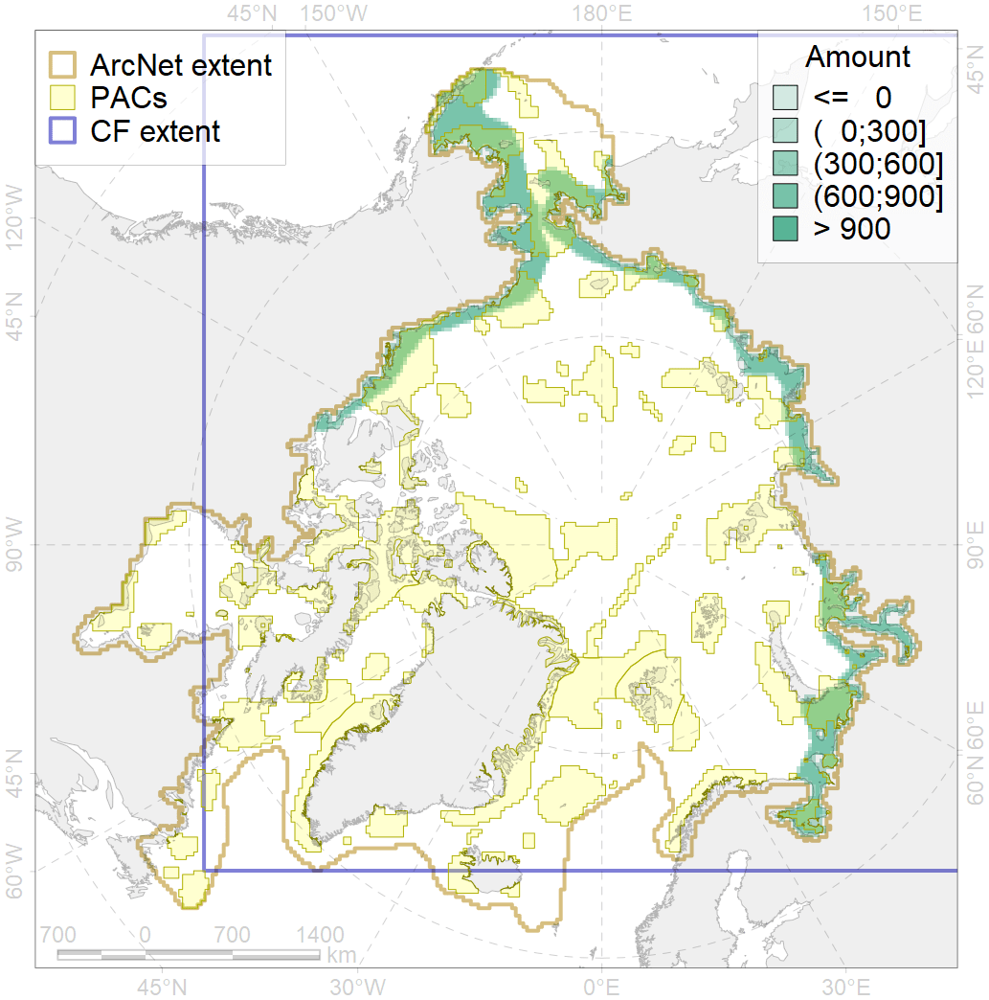
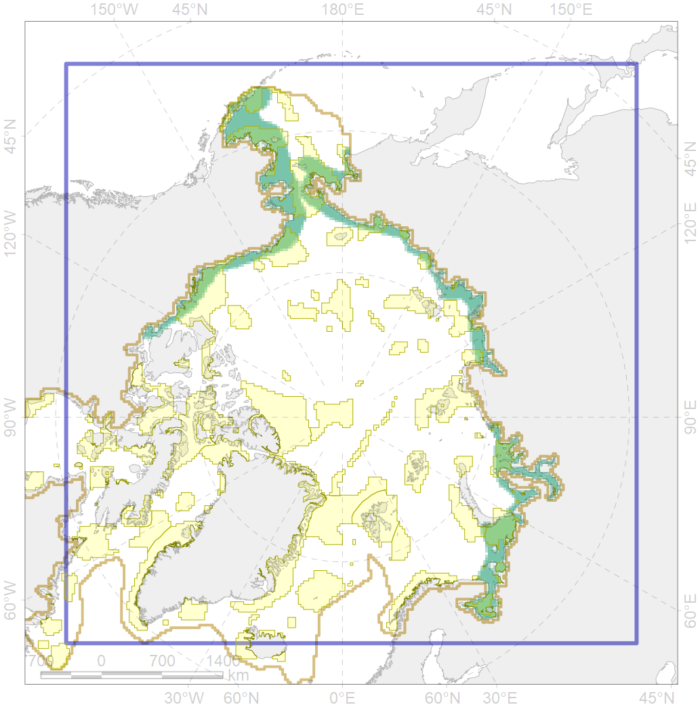

4006

| CF ID | 4006 |
| CF Name | Feeding/nursery area of the Pacific rainbow smelt (Osmerus dentex) |
| Time Period | 1930s-2010s |
| Source(s) | Chernova, 2011; Coad Reist, 2018 |
| Seasonality | January-December |
| Depth Horizon | 0-30 m |
| Methodology | Compiled from literature sources based on field observations |
| Author Name | N. Chernova |
| Notes | The map in Chernova 2011 was produced basing on the following publications: Andriashev, 1954; Kirillov, 1972; Hart, 1973; Scott, Crossman, 1973; Gukov, 1999; Sheiko, Fedorov, 2000; Dorofeeva in: Atlas…, 2002; Coad, Reist, 2004; Chereshnev, 2008; Ecosystem…, 2008 |
| Conservation Target Set in the Scenario | 0.18 |
| Conservation Target Achieved in the Scenario | 0.476 (Scenario: 264.5%) |
| PAC ID | Proportion in the PAC | Contribution to ArcNet Target Achievement | PAC’s Contribution to the Achieved Target |
|---|---|---|---|
| 1 | 3.5% | 18.4% | 6.9% |
| 2 | 0.0% | 0.1% | 0.0% |
| 3 | 7.6% | 38.7% | 14.6% |
| 4 | 0.7% | 3.3% | 1.2% |
| 5 | 10.1% | 51.1% | 19.3% |
| 6 | 0.1% | 0.5% | 0.2% |
| 8 | 1.4% | 6.7% | 2.5% |
| 9 | 0.5% | 1.7% | 0.6% |
| 10 | 0.6% | 2.8% | 1.1% |
| 12 | 0.5% | 2.6% | 1.0% |
| 13 | 0.7% | 3.5% | 1.3% |
| 15 | 0.1% | 0.6% | 0.2% |
| 16 | 3.6% | 19.1% | 7.2% |
| 17 | 0.1% | 0.4% | 0.1% |
| 18 | 0.2% | 0.8% | 0.3% |
| 20 | 6.2% | 33.0% | 12.5% |
| 21 | 0.3% | 1.8% | 0.7% |
| 23 | 0.7% | 3.4% | 1.3% |
| 24 | 0.2% | 0.9% | 0.3% |
| 25 | 0.1% | 0.2% | 0.1% |
| 26 | 2.5% | 11.2% | 4.2% |
| 60 | 3.3% | 15.4% | 5.8% |
| 61 | 0.1% | 0.4% | 0.1% |
| 62 | 5.5% | 28.3% | 10.7% |
| inner | 48.6% | 244.8% | 92.5% |
| outer | 51.2% | 19.6% | 7.4% |